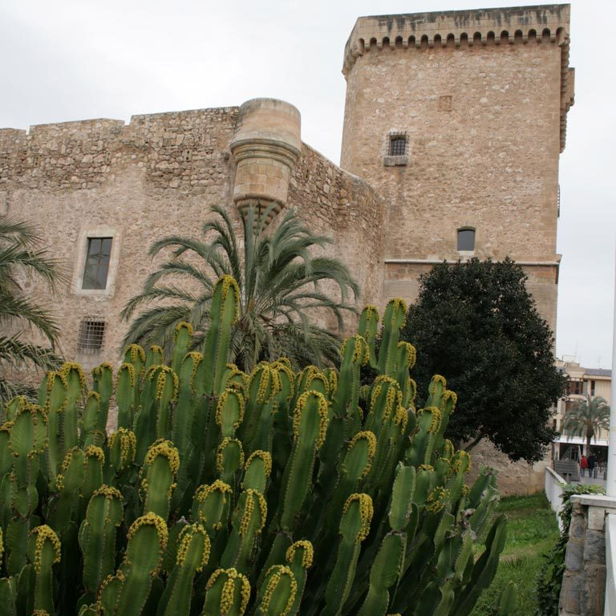

Elche is a medium size city in the south east of Spain, located in the Valencian Community, next to the Mediterranean sea. The history of Elche is marked in its beginnings by the different peoples of the Mediterranean that were populating the Southeast of the Iberian Peninsula.
The origins of Elche date back to around 5000 B.C., in the Neolithic era (Modern Stone Age), when the first men settled on the northeastern slope of what is now known as La Alcudia, south of the present site of the city, where impressed ceramics have been found. Around 3000 B.C., two more settlements arose, the Figuera Reona, the second community of Elche, located next to the current Railway Bridge, and the Promontori, located one kilometer from the Railway Bridge.
Many archaeological remains have been found in Elche, with the stone bust of the Lady of Elche (Dama de Elche in Spanish and Dama d'Elx in Valencian, respectively) being the most important. It is a sculpture of a lady dressed in ceremonial costume that represents the maximum exponent of Iberian art. This may date from the Iberian period (4th century BC). The original is in the National Archaeological Museum of Spain.
L'Alcúdia is 10 km from the current city's location and the immediate predecessor of current day Elche. This original location was settled by the Greeks and then occupied by Carthaginians and Romans. Greek Ionian colonists from the Achaean city Helike established their new colony, naming it Helíkē around 600 BC. It was a point of resistance against Carthaginian advance in Spain between the First and Second Punic Wars. The Romans called the city Ilici or Illice and granted it the status of colonia; after a brief Byzantine rule, the Goths took over, establishing an episcopal see.
Elche lost importance during the period of Moorish occupation, when it was moved slightly north to its present location. James II of Aragon took the city from the Moors in the 13th century. The city grew throughout the 18th century and became more important during the 19th century with the arrival of the railway and a booming industrial development of what used to be the traditional footwear industry. Elche was granted the title of city by King Amadeo in 1871. The espadrille industry developed in the 19th century, eventually becoming the leading Spanish municipality at producing textile footwear. By the late century, local entrepreneurs began to invest in leather footwear factories. The footwear industry grew during the Great War and thereafter.
